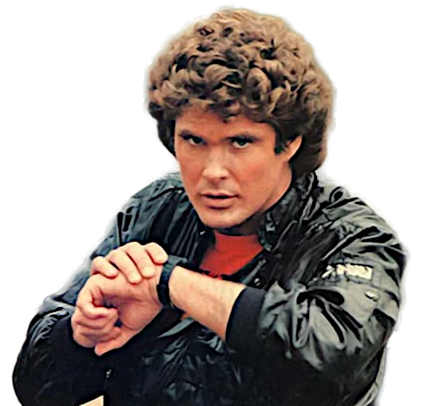
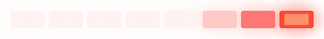

Cliquez sur le filaire orange de la carte pour choisir une photo.


Mode mesure en cours : désélectionner pour naviguer
Calcul de l'inclinaison en cours : attendez avant de mesurer
Le point effacé reliait ces deux points : leur distance peut être mesurée directement.
Les mesures et points triangulés sont à de cette photo. Tout effacer pour repartir de zéro ? Exportez-les d'abord (CSV, GeoJSON) si vous voulez les garder.
Photo de la fiche : cadrée automatiquement sur la plus grande mesure du point (sur sa photo), ou la vue actuelle de la visionneuse, telle que vous l'avez réglée.
Photo de la fiche : cadrée automatiquement sur l'objet (sur sa photo de recalage, sinon celle-ci s'il y est, sinon la plus proche), ou la vue actuelle de la visionneuse, telle que vous l'avez réglée.
Données de la fiche (cochées, dans cet ordre) :
La couche « » va être retirée pour afficher le relevé. L'enregistrer d'abord (GeoJSON, recalages compris) ?
Champs tirés des colonnes de la couche (type d'après leurs valeurs, modifiable au premier objet du relevé) :
Le modèle « » sera retiré de ce navigateur (exporté, il reste dans son fichier).
Les retirés du relevé ne pourront pas être rétablis. Envoyés dans Couche, ils y restent.
Enregistré dans le dossier des téléchargements du navigateur. Pour choisir le dossier à chaque fois (Firefox) : Paramètres → Général → Fichiers et applications → « Toujours vous demander où enregistrer les fichiers ».
Par défaut, l'instance IGN et le producteur conseil départemental de la Côte-d'Or ont été sélectionnés, car ils correspondent aux prérequis pour les mesures :
Vous pouvez changer ces réglages par le bouton Filtre (instance comprise), en bas du panneau de droite.